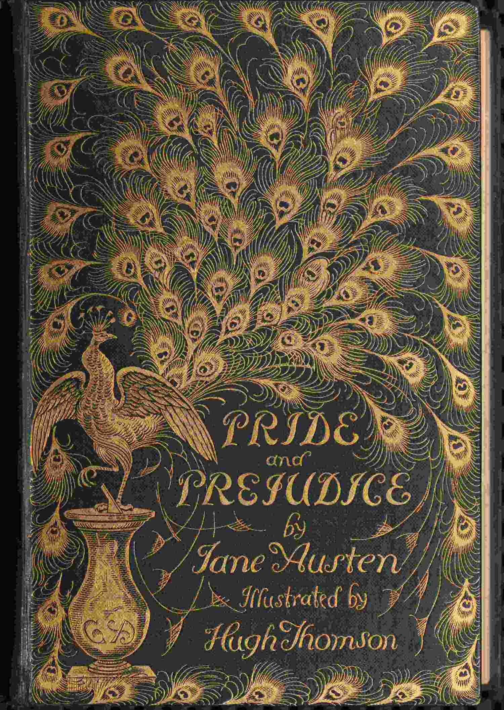

current snippet
The distinction between Time and any of the three dimensions of Space is only this…
Made for the in-between moments
I built Broll after realizing I could scroll anywhere, but couldn't carry a book everywhere. Now a book can meet me in the small spaces — one snippet at a time.
The Time Machine
The distinction between Time and any of the three dimensions of Space is only this…
01 / the problem
The habit was never the book. It was the friction between me and the book.
Scrolling always has a next thing waiting. A book asks you to remember where you were, find a quiet minute, and make the first move. Broll makes that first move small enough to keep.
I could scroll anywhere.
I couldn't read anywhere.
02 / the small idea
Broll turns long-form reading into a calm vertical feed — familiar enough to start, intentional enough to finish a thought.
Import an EPUB, TXT, or Markdown file. No account, no shelf to maintain somewhere else.
Your last position is remembered locally, so the next opening is always the right one.
About twenty words at a time. Enough to make progress without asking for your whole afternoon.
03 / keep it close
Broll is local-first by intention. The books you bring in, the place you reach, and the pace you choose all stay on the device in your hand.


04 / whenever you're ready
Broll is a small, open-source Flutter prototype — built to make reading feel possible in the margins of a day.
Visit the GitHub repo